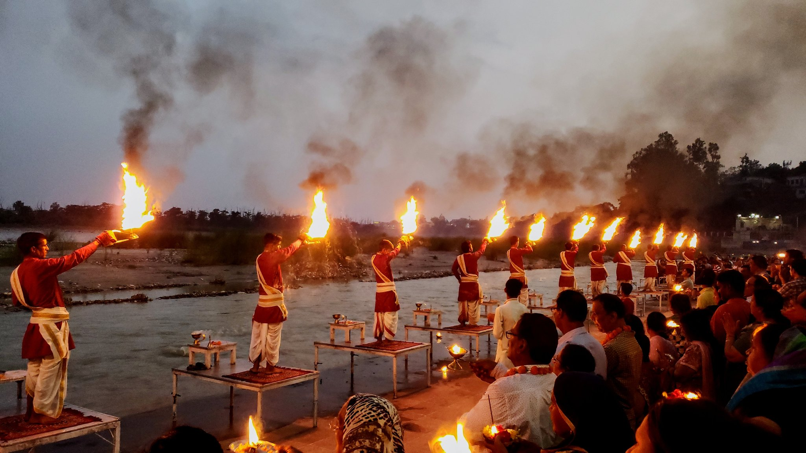
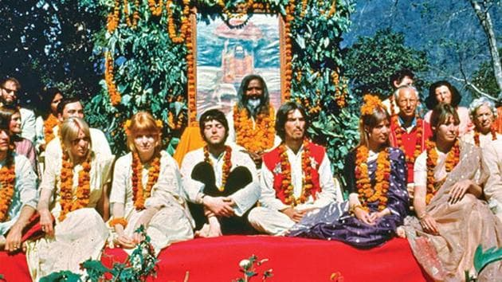

Situated in the lap of Himalayas, Rishikesh is known as the "Gateway to the Garhwal Himalayas". It is situated on the right bank of the Ganges River and is a pilgrimage town for Hindus, with ancient sages and saints meditating here in search of higher knowledge. There are numerous temples and ashrams built along the banks of the river.

A SERENE VIEW OF RISHIKESH
The Ganga Aarti (also known as Maha Aarthi) is performed at dusk at the Triveni Ghat. This popular Hindu religious ritual involves playing music and providing religious offerings to a fire. The evening aarti at the Ganga river in Rishikesh is one of the most amazing things you can see in Rishikesh apart from yoga, meditation & spiritual retreat..

AARTI AT TRIVENI GHAT
In February 1968, the Beatles visited Maharishi Mahesh Yogi's ashram in Rishikesh, attracted by his Transcendental Meditation. The Beatles composed numerous songs during their time at the ashram. Western fans arrived seeking similar experiences, resulting in new yoga and meditation centers that fueled Rishikesh's nickname as the "Yoga Capital of the World"

The Beatles at the Rishikesh ashram in the spring of 1968.